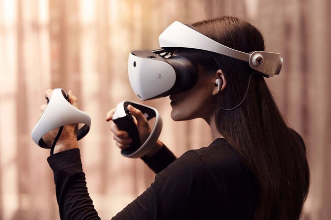

Realidad Virtual
¿Qué es la Realidad Virtual?
La realidad virtual (RV) permite al usuario sumergirse en entornos simulados mediante dispositivos como cascos o gafas especiales. Desde los años 50, esta tecnología ha evolucionado, incorporando gráficos en 3D, audio, y sensores que captan los movimientos del cuerpo para enriquecer la experiencia.

Características clave
- Inmersión total: El usuario siente que está dentro del entorno.
- Interactividad: Posibilidad de manipular objetos o realizar acciones.
- Presencia: Sensación de estar "realmente ahí".
- Gráficos tridimensionales: Mayor realismo visual.
- Seguimiento de movimiento: Reflejo en tiempo real de los movimientos del usuario.
Campos de aplicación
- Educación: Simulaciones educativas interactivas.
- Medicina: Formación quirúrgica y tratamientos terapéuticos.
- Videojuegos: Experiencias de juego realistas.
- Arquitectura: Visualización de diseños antes de construir.
- Cine: Contenido audiovisual inmersivo.
- Ciencia: Visualización de datos complejos.
Ventajas
- Entrenamiento seguro sin riesgo físico.
- Aprendizaje más atractivo y envolvente.
- Acceso a entornos inaccesibles (espacio, océano).
- Desarrollo de habilidades sin necesidad de materiales reales.
Desventajas
- Alto costo de equipos.
- Posibles efectos negativos en la salud (mareos, fatiga).
- Alta dependencia tecnológica.
- Reducción de interacción social cara a cara.
Resumen presentación 1.1.4
El contenido multimedia (audio, texto, imágenes) es esencial para comunicar eficazmente. Formatos como MP3, PNG o JPG son clave en proyectos digitales. Herramientas como PowerPoint, Canva o Audacity facilitan la creación de contenido enriquecido. La realidad virtual representa una evolución de estas herramientas al combinar todos estos elementos en experiencias inmersivas.